Обзор
Environment Editor используется для настройки различных аспектов окружающей среды на уровне, таких как туман, объемные облака, а также направление и положение солнца для каждой отдельной настройки в 24-часовом диапазоне.
Пользователи могут открывать несколько экземпляров Environment Editor одновременно. Однако настройки среды видового экрана определяются окном, которое в данный момент находится в точке фокусировки. Если редактор среды закрыт, настройки видового экрана возвращаются к настройкам по умолчанию. Только когда окно Environment Editor получает фокус, оно применяет свои настройки к видовому экрану.
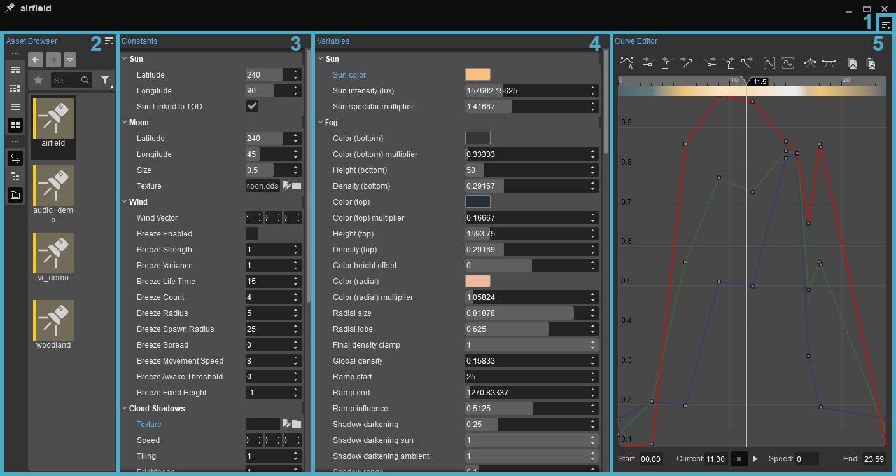
1. Меню
В меню можно попасть, нажав на кнопку 
Файл
Кнопка | Описание |
|---|---|
Новый | Вызывает панель «Создать среду», где можно создать и сохранить в папке актив среды. |
Открыть | Позволяет пользователям выбирать существующий ресурс среды для изменения или использования на текущем уровне. Также можно получить доступ к параметрам активов среды. нажав double на объект среды в браузере активов. |
Закрыть | Закрывает текущие параметры актива среды. |
Сохранить | Сохраняет текущий актив среды. |
Последние файлы | Показывает список недавно открытых ресурсов среды. |
Редактировать
Кнопка | Описание |
|---|---|
Отменить | Отменяет последнее действие. |
Повторить | Повторяет ранее отмененное действие. |
Панели инструментов
Вариант | Описание | ||||
|---|---|---|---|---|---|
Настроить... | Открывает окно настройки панели инструментов, позволяющее пользователям настраивать существующие панели инструментов и/или создавать новые панели инструментов в рамках этого инструмента. | ||||
Блокировка панелей инструментов | Если этот параметр отключен, положения панелей инструментов и разделителей внутри этого инструмента можно изменить путем перетаскивания. | ||||
Проставки | Следующие параметры позволяют пользователям использовать разделители при позиционировании панелей инструментов.
Проставки Опции меню доступны только тогда, когда Панели инструментов → Заблокировать панели инструментов отключен. |
Если у инструмента есть панель инструментов, будь то панель по умолчанию или пользовательская, приведенные выше параметры также доступны при щелчке правой кнопкой мыши в области панели инструментов (только если панель инструментов уже отображается).
Окно
Открывает параметры «Панели» и «Сбросить макет».
Кнопка | Описание |
|---|---|
Панели | Отображает панели, которые можно включать и выключать:
|
Сбросить макет | Сбрасывает расположение инструментов. |
Помощь
Открывает страницу документации для этого инструмента.
2. Обозреватель активов
Панели обозревателя ресурсов для конкретных инструментов позволяют пользователям просматривать и редактировать ресурсы в инструменте, который используется в данный момент. В отличие от автономного инструмента «Обозреватель ресурсов», ресурсы, отображаемые на этой панели, по умолчанию предварительно фильтруются; это означает, что он отображает только те ресурсы, которые относятся к самому инструменту.
Когда выбор синхронизации
3. Константы
Эти настройки остаются такими, какие установлены пользователем, независимо от времени суток (в отличие от переменных, которые можно использовать с ключевыми кадрами и анимировать).
Эти параметры нельзя изменить с помощью редактора кривых.
Солнце
Настройка | Описание |
|---|---|
Широта | Для этой опции можно установить значение от 0 до 360; где 0 означает, что солнце будет светить с севера, 90 означает, что оно будет светить с запада, 180 с юга и 270 с востока. Используйте этот ползунок, если положение севера в импортированной карте высот не установлено на Вверх в 2D-изображении. |
Долгота | Эта настройка определяет, где находится уровень на экваторе. Его можно установить от 0 до 180, где 0 соответствует Северному полюсу, 90 — экватору, а 180 — Южному полюсу. |
Солнце связано с TOD | При включении солнце будет двигаться по небу при смене времени суток. Отключение этого флажка означает, что пользователь может продолжать игру в определенное время суток и имитировать движение солнца по небу без обновления времени. |
Луна
Настройка | Описание |
|---|---|
Широта | Устанавливает широту положения Луны. |
Долгота | Устанавливает долготу положения Луны. |
Размер | Изменяет размер луны. |
Текстура | Определяет текстуру луны. |
Скайбокс
| Настройка | Описание |
|---|---|
| Материал (спецификация по умолчанию) | Определяет материал для неба. |
| Материал (низкие характеристики) | Определяет материал для скайбокса, который будет доступен только в низких спецификациях. |
Ветер
Настройка | Описание |
|---|---|
Вектор ветра | Регулирует глобальный вектор ветра. Положительные значения Y означают, насколько быстро ветер движется на север, отрицательные значения Y на юг, положительные значения X на восток, отрицательные значения X на запад. |
Бриз включен | Включает или выключает генерацию бриза. |
Сила ветра | Управляет силой создаваемого ветра. |
Бриз Дисперсия | Добавляет скорость, размер, силу и т. д. к создаваемому ветру. |
Время жизни Бриза | Управляет максимальным временем жизни каждого сгенерированного бриза. |
Бриз | Сколько бризов должно быть создано одновременно. |
Радиус ветра | Управляет размером создаваемого бриза. |
| Радиус появления ветра | В зависимости от местоположения игрока определяет радиус, по которому может проходить ветер. Меньшее число приведет к тому, что более централизованный ветер будет проходить мимо игрока, большее число будет варьировать передачи. |
Распространение бриза | Высокие значения разброса позволят ветрам распространяться в более разных направлениях вокруг игрока, но при этом следовать общему направлению глобального вектора ветра. |
Скорость передвижения ветерка | Управляет скоростью движения ветра. Работает совместно с Breeze Strength. С помощью этого варианта можно создать резкие порывы ветра; однако это приведет лишь к осторожному перемещению растительности. |
Порог пробуждения при ветре | Прокси-генераторы Breeze «будят» спящие физические объекты. |
Бриз фиксированной высоты | Помещает центр ветра на заданную высоту над плоскостью (z=0). Это предназначено для уровней без ландшафта. |
Облачные тени
Используя текстуру тени облаков, пользователи могут имитировать эффект прохождения облаков перед солнцем, проецируя тени на уровень ниже.
Настройка | Описание |
|---|---|
Текстура | Указывает, какая глобальная текстура тени отбрасывается на весь уровень. |
Скорость | Определяет скорость, с которой текстура теней облаков перемещается вдоль осей X, Y и Z. Только значения X и Y будут иметь эффект. Значение Z ничего не делает. |
Укладка плитки | Увеличьте это значение, чтобы расположить текстуру более плотно. Уменьшите это значение, чтобы растянуть его больше. |
Яркость | Управляет яркостью теней облаков. |
Инвертировать | Поскольку эта текстура должна представлять собой простой узор черно-белых облаков, включение этого параметра приведет к тому, что облака будут использовать черный цвет вместо белого. |
Цветокоррекция
Цветовая градация позволяет пользователям выбирать цветовую палитру для изменения цвета окружающей среды в зависимости от желаемой атмосферы.
| Настройка | Описание |
|---|---|
| Используйте статическую текстуру | Включите, чтобы активировать цветокоррекцию. |
| Текстура | Выберите цветовую палитру в текстуры → таблицы цветов папка. Возможный результат можно мгновенно просмотреть в окне просмотра, просто нажав кнопку обзора и выбрав цветовую палитру. |
Существует более мощный способ изменить цветокоррекцию через Flow Graph или доступ C++ к 3D Engine. Используя ColorGradient узел в Flow Graph и установив его Время перехода опцион на стоимость выше 0 приведет к периодическому смешиванию цветов, а не к мгновенному их изменению. Время смешивания определяется Время перехода ценность. Чтобы мгновенно изменить цветовую палитру, установите для нее значение 0.
CVar r_ColorGradingChartImage было изменено; отныне он меняет текущее состояние только сразу на одну текстуру, без смешивания. Это означает, что получение текущего static LUT устарело, поскольку процесс смешивания теперь является динамическим.
Полное освещение
Это решение глобального освещения (GI), также известное как SVOGI, основано на трассировке воксельных лучей и обеспечивает следующие эффекты:
- Полное освещение
- Динамический отраженный свет от static и большинства динамических объектов.
- Крупномасштабные AO и непрямые тени от геометрии static (растительности, кисти и ландшафта).
- Работает без предварительного запекания и не требует ручной настройки множества отраженных источников света или объемов света.
Дополнительную информацию о глобальном освещении см. Глобальное освещение на основе вокселей (SVOGI) страница.
Настройка | Описание |
|---|---|
Активный | Активирует глобальное освещение на основе вокселей. |
Множитель впрыска | Увеличивает интенсивность отраженного света в GI от прямых источников света (солнце и любые источники света с включенным GI). |
Множитель цвета неба | Регулирует интенсивность небесного света. Это значение можно умножить на Туман → Цвет (вверху) значение на панели «Переменные». |
Используйте цвет неба TOD | Контролирует, насколько Туман → Цвет (вверху) насыщает окружающий свет GI. Значение 0 означает, что цвет неба будет бесцветным. Значение 1 означает, что цвет полностью контролируется Туман → Цвет (вверху) вариант на панели «Переменные». |
Зеркальный усилитель | Регулирует выходную яркость непрямого зеркального компонента конической трассировки. |
Диффузное смещение | Постоянное значение окружающей среды добавлено к глобальному освещению. Помогает предотвратить появление полностью черных областей. Если отрицательный результат, модулируйте его ближним диапазоном AO. |
Максимальная длина конуса | Максимальная длина трассирующих лучей в метрах. Более короткие лучи работают быстрее. |
Обновить геометрию | При включении он вызывает полную повторную вокселизацию сцены. Это необходимо, если были изменены ландшафт, кисти или растительность. |
Минимальный размер узла | Размер наименьшего узла SVO, который будет создан во время вокселизации уровня. Меньшие значения помогают получить более детальное освещение, но могут работать медленнее и использовать больше памяти в пуле. Возможно, потребуется увеличить разрешение пула вокселей, чтобы предотвратить исчерпание пула вокселей (см. ниже). |
Режим низких характеристик | Устанавливает режим низких характеристик. Значения больше 0 упрощают шейдеры и уменьшают внутренние цели рендеринга. Если установлено значение -2, он будет инициализирован значением, указанным в sys_spec_Light.cfg, при уровне нагрузки. |
SSAO Сумма | Позволяет уменьшать величину и радиус SSAO (SSDO), когда GI активен. |
Полное освещение
Настройка | Описание |
|---|---|
Режим интеграции | Вычисления GI можно использовать несколькими способами: 0 = AO + Отскок солнца Крупномасштабное фоновое освещение (static) модулирует или заменяет фоновое освещение по умолчанию. 1 = диффузный режим GI (экспериментальный) GI полностью заменяет рассеянное окружающее освещение по умолчанию. 2 = Полный режим GI (очень экспериментальный) Как окружающее рассеянное, так и окружающее зеркальное освещение рассчитывается путем трассировки воксельного конуса. |
Порталы деформируются | Увеличивает точность отслеживания направления порталов. |
Порталы | Добавляет портальное освещение вместе с прямым освещением, обеспечивая хорошее освещение неба в помещении даже при одном непрямом отражении. 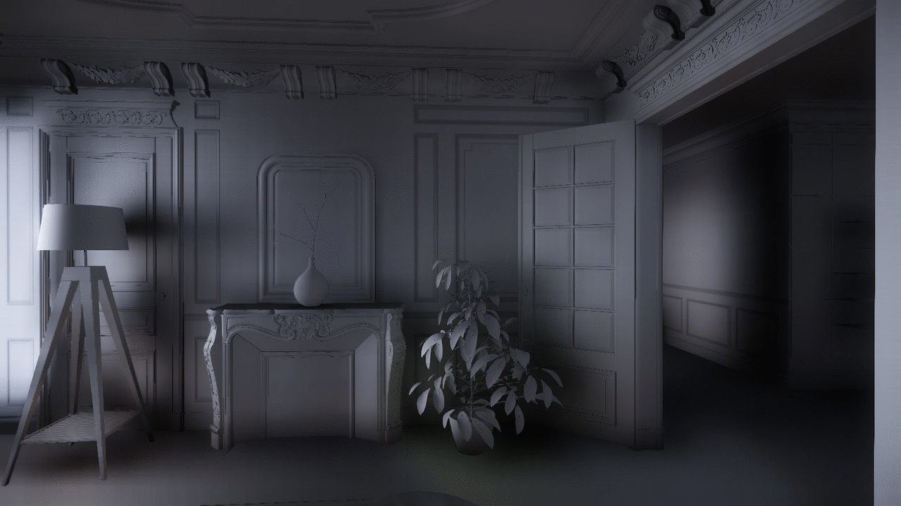 |
Диффузный усилитель | Регулирует выходную яркость непрямого диффузного компонента конусной трассировки. |
Зеркальный из диффузного | Позволяет минимизировать или полностью исключить необходимость использования датчиков окружающей среды путем анализа результатов трассировки диффузного конуса.
|
Количество отскоков | Максимальное количество непрямых отскоков от 0 до 2. Первый непрямой отскок полностью динамичен. Остальные отказы кэшируются в SVO и в основном это static. |
Насыщенность | Управляет цветовой насыщенностью всего распространяемого света. |
Ускоритель распространения | Управляет затуханием света во время распространения -SVO. Значения больше 1 помогают распространять свет дальше, но могут привести к появлению большего количества артефактов утечки света. |
Ширина диффузного конуса | Управляет шириной диффузных конусов. Более широкие конусы работают быстрее, но могут вызвать чрезмерную окклюзию и большую утечку света. |
Обновить освещение | При переключении ON принудительно выполняется одно полное обновление освещения SVO. |
Основное ядро Halfres | Использует меньше лучей для вторичного отражения для более быстрого обновления. Разница видна только тогда, когда количество отскоков превышает 1. |
Ядро Halfres вторичное | Использует меньше лучей для вторичного отражения. Это обеспечивает более быстрое обновление кэшированного освещения, но может снизить точность вторичного отражения. Разница видна только тогда, когда количество отскоков равно выше 1. |
Используйте световые зонды | Если этот параметр включен, освещение датчиков окружающей среды умножается на GI. Если отключено, рассеянный вклад датчиков окружающей среды игнорируется. В режимах 1 или 2, это позволяет использовать глобальный зонд окружающей среды для светового люка вместо Переменные → Цвет (вверху) и Множитель цвета (верхний). |
Коэффициент вокселизации LOD | Управляет соотношением расстояния LOD для вокселизации. Большие значения помогают получить более детальное освещение на расстоянии, но могут работать медленнее и будут использовать больше памяти в пуле. Возможно, потребуется увеличить параметр «Разрешение пула вокселей», чтобы предотвратить исчерпание пула вокселей. |
Граница карты вокселизации | Пропускает вокселизацию геометрии вблизи краев карты. В случае автономной вокселизации это ускорит процесс экспорта и уменьшит размер данных на диске. |
Разрешение пула вокселей | Размер объемных текстур (размеры x,y,z), используемых для хранения данных SVO. Допустимые значения: 128 и 256. Если это значение было изменено, двигатель необходимо перезапустить. Слишком большой размер пула может привести к зависанию long при изменении какого-либо параметра GI. |
Максимальное расстояние обзора объектов | Вокселизирует только объекты с максимальным расстоянием обзора, превышающим это значение. Это влияет только на большие и важные объекты. Если установлено значение 0, он отключает эту проверку, а также отключает пропуск слишком маленьких треугольников. Изменения видны после полной ревокселизации. Нажмите Обновить геометрию или перезапустите двигатель для полной повторной вокселизации. |
Солнце RSM Инъекция | Включает дополнительный солнечный свет RSM. Помогает добиться отражения солнечных лучей в чрезмерно закрытых областях, где методы первичной инъекции не могут обеспечить достаточное количество солнечного света. Работает только в Режим низких характеристик 0. |
SS Трассировка глубины | Использует трассировку глубины SS вместе с трассировкой вокселей. |
Тени от Солнца | Вычисляет солнечные тени с помощью трассировки лучей SVO. Обычно его следует использовать в сочетании с обычными картами теней и тенями экранного пространства. |
Тени Мягкость | Управляет мягкостью солнечных теней с трассировкой лучей, если включен параметр «Тени от солнца». |
Тени от карты высот | Включает карту высот местности всего уровня в солнечные тени с трассировкой лучей. |
Тропосфера активна | Активирует атмосферные эффекты SVO, полностью заменяет вычисления тумана по умолчанию. После активации сцену необходимо повторно вокселизировать. Нажмите Обновить геометрию или перезапустите двигатель для полной повторной вокселизации. |
Яркость тропосферы | Управляет интенсивностью атмосферных эффектов. |
| Плотность тропосферы | Управляет плотностью атмосферных эффектов. |
Аналитические окклюдеры | Обеспечивает базовую поддержку форм окклюзии, размещаемых вручную, таких как коробки, цилиндры и капсулы. Это также позволяет создавать непрямые тени от персонажей. Теневые капсулы определяются в .chrparams файлы. |
Аналитический GI | Полностью заменяет трассировку вокселей аналитической трассировкой форм. Отскок света поддерживается только в режиме интеграции 0. |
Трассировка вокселей | Включает вокселы в трассировку. Позволяет исключить трассировку вокселей, если нужны только прокси. |
Потоковые вокселы | Включает потоковую передачу воксельных данных с диска вместо вокселизации во время выполнения. Потоковая передача используется только в Game Launcher. В редакторе вокселы всегда генерируются во время выполнения. Если этот параметр включен, экспорт уровней будет включать процесс предварительного расчета вокселей, который может занять до одного часа для больших и сложных уровней. |
Полупрозрачная яркость | Регулирует яркость полупрозрачных поверхностей. Поражает в основном растительность, листья и траву. |
Смещение точечного света | Модулирует незатененное впрыскивание точечных источников света. Это помогает имитировать множественные отскоки. |
Высокая глянцевая окклюзия | Обычно зеркальный вклад зондов окружающей среды корректируется диффузным GI. Этот параметр контролирует величину коррекции; обычно затемняет очень глянцевые и отражающие поверхности. |
4. Переменные
В этом разделе находятся настройки, которые можно изменить с помощью редактора кривых справа.
Нажатие на настройку выделит имя и отобразит графическое представление этой настройки на панели над редактором кривых, показывая результаты значений в разное время дня:
Солнце
Настройка | Описание |
|---|---|
Цвет солнца | Значение RGB задает цвет источника света, используемого в качестве солнца. Нажмите на цветное поле рядом с Цвет солнца чтобы выбрать цвет вручную, или введите значение RGB. |
Интенсивность солнца (люкс) | Определяет значение яркости солнца в люксах. |
Множитель солнечного отражения | Управляет зеркальным эффектом солнечного света. Всегда следует устанавливать значение 1, чтобы гарантировать правильную работу материалов на основе конвейера физического затенения (PBS). Для получения дополнительной информации см. Физически обоснованное затенение (PBS). |
Скайбокс
| Настройка | Описание |
|---|---|
| Вращение | Вращает небесный блок вокруг осей X и Y. |
| Виртуальное растяжение | Растягивает материал неба и устанавливает высоту по оси Z. |
| Цвет | Определяет дополнительный цвет для материала неба. |
| Интенсивность (люкс) | Устанавливает интенсивность свечения скайбокса, то есть яркость. |
| Фильтр | Добавляет цвет фильтра в небесный блок. |
| Непрозрачность | Регулирует непрозрачность небесного поля. |
Туман
Настройка | Описание | ||||||||
|---|---|---|---|---|---|---|---|---|---|
Цвет (внизу) | Это управляет нижним цветом вертикального градиента, используемого для создания атмосферного тумана.. | ||||||||
Множитель цвета (нижний) | Сила влияния цвета (внизу) на глобальный туман. | ||||||||
Высота (внизу) | Указывает высоту, с которой начинается градиент. | ||||||||
Плотность (внизу) | Плотность тумана внизу градиента. Диапазон значений — от 0 до 1, значение по умолчанию — 1. | ||||||||
Цвет (вверху) | Это управляет верхним цветом вертикального градиента, используемого для создания атмосферного тумана. | ||||||||
Множитель цвета (верхний) | Определяет интенсивность верхнего цвета. | ||||||||
Высота (сверху) | Указывает высоту, на которой заканчивается градиент. | ||||||||
Плотность (сверху) | Плотность тумана в верхней части градиента. Диапазон значений — от 0 до 1, значение по умолчанию — 1. | ||||||||
Смещение высоты цвета | Смещает цвет вертикального градиента тумана вверх или вниз. Диапазон значений от -1 до 1, значение по умолчанию — 0. | ||||||||
Цвет (радиальный) | Определяет цвет компонента тумана, ответственного за создание ореолов вокруг Солнца. | ||||||||
| Цветовой (радиальный) множитель | Определяет интенсивность цвета, используемого для радиального тумана. | ||||||||
Радиальный размер | Определяет размер гало вокруг Солнца. Диапазон значений — от 0 до 1, значение по умолчанию — 0,75. | ||||||||
Радиальная доля | Определяет степень влияния расстояния на радиальную составляющую тумана. Диапазон значений — от 0 до 1, значение по умолчанию — 0,5.
Имейте в виду, что если значение Радиального лепестка слишком велико, оно может проецироваться перед объектами:
| ||||||||
Зажим окончательной плотности | Определяет максимальную плотность тумана, разрешенную для окончательного смешивания со сценой. Диапазон значений — от 0 до 1, значение по умолчанию — 1. Это позволяет небу, горизонту и другим ярким далеким объектам проникать сквозь него, даже если туман густой. Однако это значение не следует устанавливать слишком низким. В противном случае восприятие глубины может быть нарушено, что приведет к неправдоподобным визуальным эффектам и, казалось бы, очевидным артефактам, особенно при перемещении камеры. | ||||||||
Глобальная плотность | Это значение определяет глобальную плотность тумана. Более высокие значения создают более плотный туман. | ||||||||
Начало рампы | Значения линейного изменения можно использовать для управления плотностью тумана относительно камеры. | ||||||||
Конец рампы | Это определяет расстояние от камеры, на котором туман будет отображаться с максимальной плотностью, определяемой параметром Global Density. | ||||||||
Влияние рампы | Это значение определяет, насколько значения линейного изменения влияют на рендеринг тумана. | ||||||||
Тень затемняется | Влияет на то, как туман выглядит в затененных областях. Указывает, насколько цвет тумана, рассчитанный на пиксель с помощью приведенных выше настроек, обычно затемняется на основе значения объемной тени, вычисленного движком на пиксель. Диапазон значений от 0 до 1, значение по умолчанию — 0,25, где 0 полностью затемняет, а 1 отключает эффект тени на тумане. | ||||||||
Тень, затемняющая солнце | Определяет степень индивидуального влияния на радиальный цвет тумана в диапазоне от 0 до 1. где 0 означает большое влияние, а 1 означает отсутствие. Значение по умолчанию — 1. | ||||||||
Тень, затемняющая окружающий мир | Указывает, насколько индивидуально влияет цвет окружающего тумана, например градиент высоты, в диапазоне от 0 до 1. где 0 означает большое влияние, а 1 означает отсутствие. Значение по умолчанию — 1. | ||||||||
Диапазон теней | Указывает, насколько далеко прорисовываются объемные тени в диапазоне от 0 до 1, значение по умолчанию — 0,1; то есть до 10% расстояния дальней плоскости отсечения уровня. |
Объемный туман
Настройка | Описание |
|---|---|
Высота (внизу) | Указывает высоту, с которой начинается градиент. |
Плотность (внизу) | Плотность тумана внизу градиента находится в диапазоне от 0 до 1, значение по умолчанию — 1. |
Высота (сверху) | Указывает высоту, на которой заканчивается градиент. |
Плотность (сверху) | Плотность тумана в верхней части градиента в диапазоне от 0 до 1, по умолчанию — 0,0001. |
Глобальная плотность | Это значение определяет глобальную плотность тумана. Более высокие значения создают более плотный туман. |
Начало рампы | Значения линейного изменения можно использовать для управления плотностью тумана относительно камеры. |
Конец рампы | Это устанавливает расстояние от камеры, на котором туман будет отображаться с максимальной плотностью, заданной параметром Global Density. |
Цвет (атмосфера) | Определяет цвет альбедо тумана для рассеяния солнечной атмосферы. |
Анизотропия (атмосфера) | Регулирует анизотропию рассеяния солнечной атмосферы. Где 0 — изотропное, 1 — идеальное прямое рассеяние, -1 — идеальное обратное рассеяние. |
Цвет (солнечный радиальный) | Определяет цвет альбедо тумана для радиального рассеяния солнца. |
Анизотропия (солнечная радиальная) | Регулирует анизотропию радиального рассеяния Солнца. Где 0 — изотропное, 1 — идеальное прямое рассеяние, -1 — идеальное обратное рассеяние. |
Коэффициент радиального смешивания | Регулирует коэффициент смешивания солнечной атмосферы и радиального рассеяния солнца. |
Радиальный режим наложения | Регулирует коэффициент режима наложения для смешивания солнечной атмосферы и радиального рассеяния солнца. Смешивание достигается следующим образом: Рассеяние Солнца = ((1,0 - коэффициент смешивания * режим наложения) * солнечная атмосфера) + (коэффициент смешивания * солнечный радиал) Режим смешивания = 0 означает полностью аддитивное смешивание: Рассеяние Солнца = солнечная атмосфера + (коэффициент смешивания * радиал Солнца) Режим наложения = 1 означает полностью линейную интерполяцию: Рассеяние Солнца = ((1,0 - коэффициент смешения) * солнечная атмосфера) + (коэффициент смешения * радиал Солнца) |
Цвет (сущности) | Определяет глобальный цвет альбедо тумана для рассеяния всех типов света, кроме солнечного. |
Анизотропия (сущности) | Регулирует анизотропию всех участвующих сред, например. объем тумана, кроме глобального тумана. Где 0 — изотропное, 1 — идеальное прямое рассеяние, -1 — идеальное обратное рассеяние. |
Диапазон | Регулирует максимальное расстояние лучевого объемного тумана в метрах. Выход за пределы диапазона покрывается аналитическим объемным туманом. Значение по умолчанию — 64. |
рассеяние | Регулирует коэффициент рассеяния всех участвующих носителей. |
Вымирание | Регулирует коэффициент исчезновения всех участвующих СМИ. |
Аналитическая видимость тумана | Регулирует видимость аналитического объемного тумана. Где 0 — отсутствие аналитического объемного тумана, 1 — видимый аналитический объемный туман. |
Зажим окончательной плотности | Определяет максимальную плотность тумана, разрешенную для окончательного смешивания со сценой, в диапазоне от 0 до 1, где по умолчанию — 1. Это позволяет небу, горизонту и другим ярким далеким объектам проникать сквозь него, даже если туман густой. Однако пользователям следует быть осторожными и не устанавливать это значение слишком низким, иначе восприятие глубины будет нарушено и приведет к неправдоподобным визуальным эффектам и, казалось бы, очевидным артефактам, особенно при перемещении камеры. |
Небесный Свет
Настройка | Описание | ||||||
|---|---|---|---|---|---|---|---|
Интенсивность солнца | Значение RGB, определяющее цвет солнца, который используется для вычисления цвета атмосферы. | ||||||
Множитель интенсивности солнца | Это значение устанавливает яркость солнца. Чтобы получить общий цвет, его умножают на интенсивность солнца. | ||||||
Рассеяние Ми | Этот параметр устанавливает константу рассеяния Ми. Рассеяние Ми вызвано аэрозолями в нижних слоях атмосферы на высоте до 1 км.
| ||||||
Рэлеевское рассеяние | Этот параметр определяет константу рассеяния Рэлея. Рэлеевское рассеяние вызвано частицами в атмосфере размером до 8 км и зависит от длины волны. При значении по умолчанию около 2,0 он создает типичные земные цвета неба; голубое небо днем, красновато-желтоватые цвета на закате. Более высокие значения приводят к более плотной атмосфере, при этом цвета неба смещаются в сторону красного и желтого. Меньшие значения дают более синее небо.
| ||||||
Фактор солнечной анизотропии | Фактор анизотропии контролирует появление солнца на небе. Чем ближе это значение к -1,0, тем острее и меньше будет солнечное пятно.
| ||||||
Длина волны R, G и B | Эти тройные значения определяют длины волн основных цветов RGB. через NM (морских миль). Изменение этих значений приведет к смещению цветов полученных градиентов и созданию различных видов атмосферы. Это может быть очень полезно в сочетании с рэлеевским рассеянием, если выбрана интенсивность чистого ярко-белого солнца.
|

Ночное небо
Настройка | Описание | ||||||
|---|---|---|---|---|---|---|---|
Цвет горизонта | Значение RGB, масштабируемое с помощью множителя, определяет цвет горизонта градиента ночного неба. Для получения дополнительной информации см. раздел «Множитель ночного неба» ниже. | ||||||
Зенитный цвет | Значение RGB, масштабируемое с помощью множителя, определяет зенитный цвет градиента ночного неба. Для получения дополнительной информации см. раздел «Множитель ночного неба» ниже. | ||||||
Зенитный сдвиг | Это значение смещает градиент ночного неба. Маленькие значения смещают его больше вниз. Более высокие значения смещают его вверх.
| ||||||
Интенсивность звезды | Это значение контролирует общую яркость звезд. | ||||||
Цвет луны | Значение RGB, масштабируемое множителем, определяет цвет излучения Луны. Для получения дополнительной информации см. раздел «Множитель ночного неба» ниже. | ||||||
Цвет внутренней короны Луны | Значение RGB, масштабируемое с помощью множителя, определяет цвет внутренней короны Луны. Для получения дополнительной информации см. раздел «Множитель ночного неба» ниже. | ||||||
Шкала внутренней короны Луны | Это значение контролирует размер и размытость внутренней короны Луны. Меньшие значения создадут более крупную и размытую корону, тогда как более высокие значения создадут меньшую и более сфокусированную корону. | ||||||
Цвет внешней короны Луны | Значение RGB, масштабируемое множителем, определяет цвет внешней короны Луны. Для получения дополнительной информации см. раздел «Множитель ночного неба» ниже. | ||||||
Масштаб внешней короны Луны | Это значение контролирует размер и размытость внешней короны Луны. Меньшие значения создадут более крупную и размытую корону, тогда как более высокие значения создадут меньшую и более сфокусированную корону. Различные внутренние и внешние масштабы лунной короны:
|
Множитель ночного неба
Настройка | Описание |
|---|---|
Цвет горизонта | Изменяет интенсивность цвета горизонта. |
Зенит Цвет | Изменяет интенсивность цвета зенита. |
Цвет Луны | Изменяет интенсивность цвета луны, используемой на уровне. |
Цвет внутренней короны Луны | Изменяет интенсивность цвета внутренней короны Луны. |
Цвет внешней короны Луны | Изменяет интенсивность цвета внешней короны Луны. |
Затенение облаков
Настройка | Описание |
|---|---|
Вклад Солнца | Это значение определяет, насколько солнечный свет влияет на яркость облаков. |
Небесный вклад | Это значение определяет, насколько свет неба влияет на яркость облаков. |
Солнце по индивидуальному заказу | Дает пользователю возможность использовать собственный цвет солнечного света. |
Пользовательский цветовой множитель Sun | Влияет на интенсивность Солнце по индивидуальному заказу на облаках. |
Пользовательское влияние цвета Солнца | Значение 0 использует глобальный цвет солнца (указанный в Солнце → Цвет Солнца в Environment Editor), значение 1 включает это. Любое промежуточное значение смешивает два цвета. |
Объемные облака
Настройка | Описание |
|---|---|
Глобальная облачность | Регулирует глобальную облачность объемных облаков. |
Высота облаков | Регулирует высоту нижней части объемных облаков. |
Толщина облаков | Регулирует вертикальная толщина объемных облаков. |
Облака по краям турбулентности | Регулирует интенсивность турбулентности в краевой области объемных облаков. |
Порог границы облаков | Регулирует порог плотности краевой области объемных облаков. |
Множитель однократного рассеяния Солнца | Регулирует множитель количества солнечного света при однократном рассеянии в одном событии рассеяния. |
Множитель рассеяния Солнца низкого порядка | Регулирует множитель количества солнечного света многократного рассеяния низкого порядка в диапазоне от 2 до 30 событий рассеяния. |
Анизотропия рассеяния Солнца низкого порядка | Регулирует количество многократного рассеяния низкого порядка и определяет, рассеивается ли свет вперед или назад. Многократное рассеяние низкого порядка аппроксимируется фазовой функцией Шлика. Это определяет среднее направление рассеяния света. Значение 1 означает рассеяние полностью вперед, 0 означает рассеяние во всех направлениях, -1 означает рассеяние полностью назад. |
Множитель рассеяния Солнца высокого порядка | Регулирует множитель количества солнечного света многократного рассеяния высокого порядка в более чем 30 событиях рассеяния. |
Множитель освещения неба | Регулирует множитель количества освещения неба. Освещение неба рассматривается как многократное рассеяние высокого порядка. |
Множитель освещения земли | Регулирует множитель количества наземного освещения, освещающего облака с земли. Наземное освещение рассматривается как многократное рассеяние высокого порядка. |
Альбедо земли | Регулирует средний цвет альбедо земли. |
Затухание многократного рассеяния | Регулирует коэффициент ослабления многократного рассеяния света высокого порядка. Когда это значение увеличивается, свет становится менее ослабленным при движении в облаках, и поэтому облака выглядят ярче. |
Сохранение многократного рассеяния | Регулирует количество света многократного рассеяния высокого порядка, выходящего из облаков после событий бесконечного рассеяния. Многократное рассеяние света, исходящего из облаков, увеличивается вместе с расстоянием, которое свет проходит в облаках. Это определяет максимальную сумму. Если установлено значение 0,5, до 50 процентов света исходит от облаков после событий бесконечного рассеяния. |
Эффект растушевки пудры | Регулирует коэффициент эффекта порошка для затенения облаков. Судя по всему, становится темнее толщина облаков. |
Процент поглощения | Регулирует процентное соотношение коэффициента поглощения и коэффициента рассеяния облаков. Увеличение этого значения делает облака более темными. |
Альбедо атмосферы | Регулирует цвет альбедо участвующих атмосферных сред. |
Атмосферное рассеяние | Регулирует множитель интенсивности атмосферного рассеяния. Яркость атмосферного рассеяния изменяется в соответствии с интенсивностью Солнца. |
Влияние ветра | Регулирует влияние ветра определяется в настройках уровня. |
Эффект солнечных лучей
Настройка | Описание | ||||||||
|---|---|---|---|---|---|---|---|---|---|
Видимость солнечных валов | DEPRECATED - Это значение контролирует видимость солнечных валов. | ||||||||
Видимость солнечных лучей | Это значение контролирует видимость солнечных лучей. Более высокие значения вызывают более яркие лучи вокруг Солнца. | ||||||||
Ослабление солнечных лучей | Это значение контролирует затухание солнечных лучей. Более высокие значения приводят к более коротким лучам вокруг Солнца: | ||||||||
Влияние солнечных лучей на цвет солнца | Это значение определяет, какая часть цвета солнца влияет на цвет солнечных лучей. | ||||||||
Солнечные лучи нестандартного цвета | Это значение определяет пользовательский цвет солнечных лучей. Солнечные валы и солнечные лучи вместе взятые, со следующими значениями: эти значения слева направо, Видимость солнечных валов/видимость солнечных лучей/ослабление солнечных лучей:
|

Расширенный
Настройка | Описание |
|---|---|
Цвет океанского тумана | Этот цвет RGB определяет цвет океанского тумана в определенное время суток. |
Множитель цвета океанского тумана | Этот параметр управляет яркостью океанского тумана и умножается на цвет океанского тумана. |
Плотность океанского тумана | Это значение контролирует плотность океанского тумана. |
Устаревший
Настройки этой переменной устарели.
HDR
Настройка | Описание |
|---|---|
Шкала плеч кривой пленки | Управляет наклоном на кончике кривой; изменяет яркие значения. |
Шкала средних тонов кривой пленки | Управляет линейностью середины кривой; изменяет значения серого. |
Шкала изгиба пленки | Управляет наклоном у основания кривой; изменяет темные значения. |
Белая точка кривой пленки | Устанавливает значение, которое будет отображаться как чисто белый в изображении с тональной компрессией. Рекомендуемое значение этого параметра — 4. |
Насыщенность | Насыщенность цвета перед тональной компрессией. |
Цветовой баланс | HDR Цветовой баланс для управления общим цветом сцены. |
EV мин. | Определяет, насколько ярко изображение будет экспонироваться в областях с низкой освещенностью, например темные интерьеры. |
EV Макс | Управляет тем, насколько тусклым будет изображение в областях с высокой освещенностью, например яркий экстерьер. |
| EV Автокомпенсация | Обеспечивает больший контроль над экспозицией сцены. По умолчанию сцена пытается выставить значение среднего серого. Эта опция может быть полезна, когда требуется слегка переэкспонированная/недоэкспонированная сцена. |
Сумма цветения | Управляет интенсивностью свечения светящихся/освещенных объектов. |
Фильтры
Настройка | Описание |
|---|---|
Зерно | Этот параметр применяет зернистый фильтр к конечному изображению. В предыдущих версиях этот параметр содержал ошибку и в определенных ситуациях случайно отображал или скрывал фильтр зерна. Если это поведение будет использоваться в проекте, его можно снова включить с помощью CVar. r_GrainEnableExposureThreshold. |
Цвет фотофильтра | Этот параметр применяет цветовой фильтр к конечному изображению. |
Плотность фотофильтра | Этот параметр управляет силой фильтрации цвета фотографии. |
Глубина резкости
Настройка | Описание |
|---|---|
Диапазон фокусировки | Этот параметр определяет, на каком расстоянии фон начинает размываться, когда он не в фокусе. |
Сумма размытия | Этот параметр определяет, насколько сильно размыты области, находящиеся вне фокуса. |
Тени
Параметры в этом разделе дают пользователю контроль над настройками смещения каскадной карты теней солнца в различных диапазонах. Это не влияет на точечные источники света.
Настройки смещения можно определить для каждого источника света в свойствах источника света.
CRYENGINE поддерживает несколько каскадов. Каскад 0 — ближайший к камере, каскад 1 — самый дальний и т. д. Чем выше каскад, тем ниже точность теней, т.е. ниже разрешение для более высоких каскадов.
Акне на карте теней обычно видны на средней дистанции, особенно на 3-м и 4-м каскаде. Чтобы предотвратить появление артефактов на карте теней, настройки смещения солнечных теней и наклона отображаются в зависимости от времени суток. 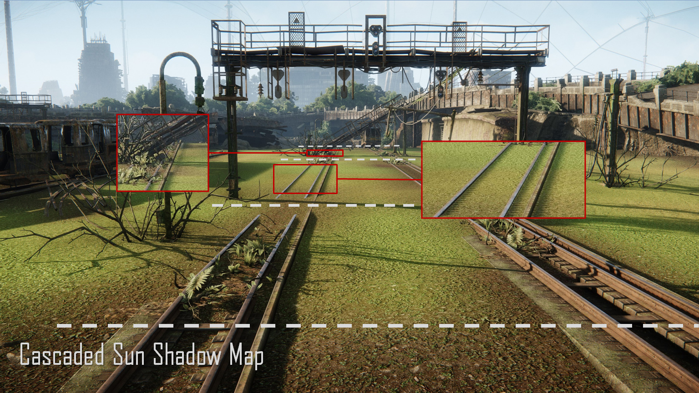
Карта каскадных солнечных теней
Настройка | Описание |
|---|---|
Предвзятость | Перемещает каскад теней к объектам, отбрасывающим тень, или от них. |
Смещение наклона | Позволяет пользователю регулировать градиент, смещение на основе наклона, используемое для расчета смещения тени. |
Тень дрожит | Настраивает резкость теней. |
Теневое смещение
Чем ниже значение Bias, тем больше тени будут связаны с создателем тени.
В большинстве случаев значение Bias следует поддерживать как можно меньшим, чтобы обеспечить правильную связь между тенью и источником тени. Значения от 0,01 до 0,05 дают лучший результат.
Ниже видно, как тень, отбрасываемая сферой, движется при изменении ее смещения.:
Смещение = 0 | Смещение = 0,05 |
|---|---|
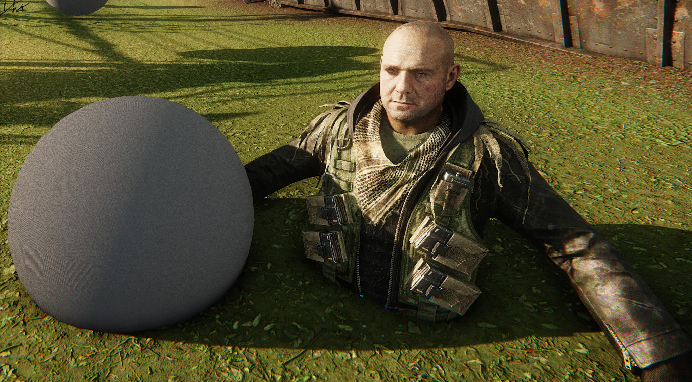 | |
Смещение = 1 | Смещение = 5 |
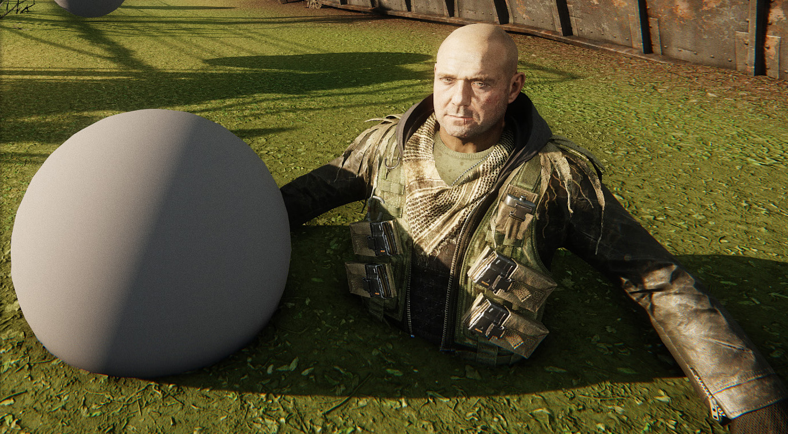 | 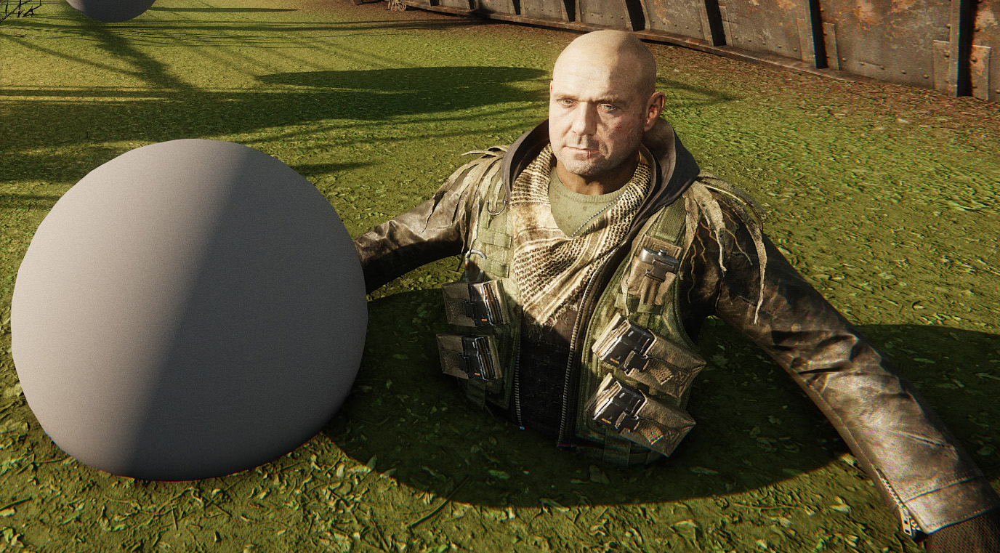 |
Смещение наклона тени
Чем выше уклон наклона, тем меньше теней будет отбрасываться от поверхности при большом угле падения света.
В большинстве случаев значение Slope Bias следует поддерживать на достаточно высоком значении, чтобы удалить артефакты, обычно возникающие из-за низкого смещения теней. Значения от 32 до 64 дают лучший результат.
Смещение наклона = 8 | Смещение наклона = 32 |
|---|---|
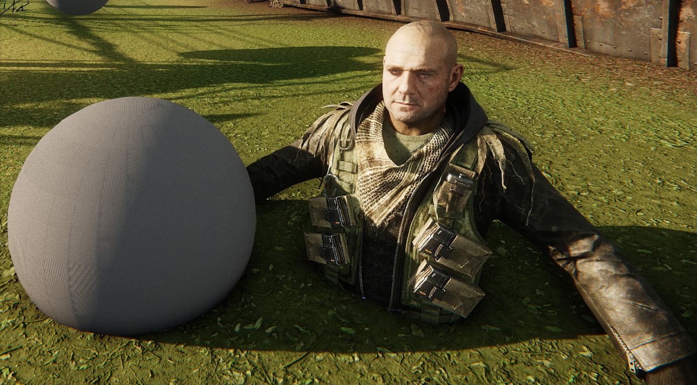 | 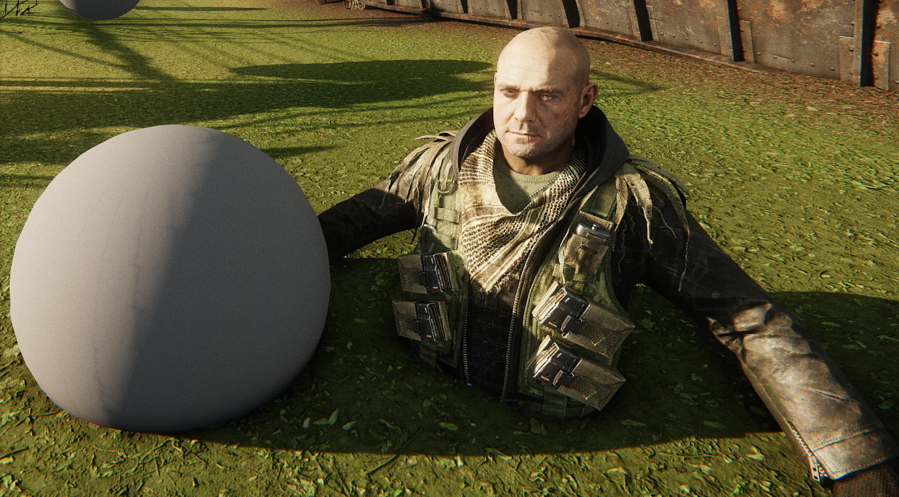 |
Смещение наклона = 64 | Смещение = 0,025 / Смещение наклона = 32 |
На последнем изображении выше был найден компромисс между смещением 0,025 и наклоном смещения 32. Некоторые артефакты видны, но самозатенение в целом лучше.
Для теневых каскадов не существует универсальной настройки. Это зависит от ресурсов, положения солнца, условий освещения и т. д. Настройте эти параметры в зависимости от желаемого результата и имейте в виду, что они практически не влияют на производительность.
Тень дрожит
Дрожание теней можно определить с помощью Environment Editor, а также r_ShadowJittering CVar, чтобы дать пользователю возможность контролировать резкость теней.
Обратите внимание, что чем больше используется джиттеринг, тем выше производительность.
Дрожание тени = 2,5 (по умолчанию) | Теневое дрожание = 1 | Теневое дрожание = 10 |
|---|---|---|
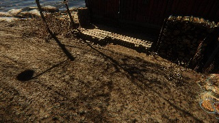 | 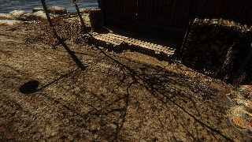 | 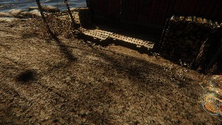 |
ShadowsAutoBias
Эта переменная CVar обеспечивает режим, который пытается автоматически вычислить оптимальное смещение тени.
Квар/Команда | Описание | Комментарий и примеры |
|---|---|---|
e_ShadowsAutoBias | 0: Деактивировано 1.0: хорошее значение по умолчанию. | Активирует функцию и действует как шкала вычисленного смещения. |
Устарело
Параметры этого раздела устарели.
5. Редактор кривых
В редакторе кривых отображается визуальное представление изменений, внесенных в вышеупомянутые параметры. С помощью этой панели можно просмотреть изменение значений выбранной настройки в течение одного дня и то, как постепенно они меняются с течением времени. 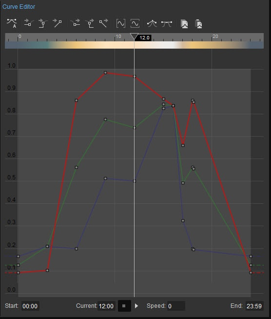
Редактор кривых состоит из следующих разделов:
Панель инструментов
Редактор кривых имеет собственную панель инструментов: 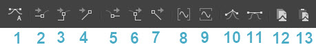
Кнопка | Имя | Описание |
|---|---|---|
1 | Установите вход и выход по касательной к автоматическому режиму. | Устанавливает автоматические касательные для выбранных ключей (квадратов на графике). |
2 | Устанавливается по касательной к нулю | Устанавливает касательную для выбранных ключей (квадратов на графике) на ноль. |
3 | Установить по касательной к шагу | Устанавливает в касательная для выбранных клавиш (квадратов на графике) к шагу. |
4 | Устанавливается по касательной к линейному | Устанавливает в касательная для выбранных ключей (квадратов на графике) к линейной. |
5 | Установить касательную к нулю | Устанавливает внешний тангенс для выбранных ключей (квадратов на графике) равным нулю. |
6 | Установить касательную к шагу | Устанавливает из касательная для выбранных клавиш (квадратов на графике) к шагу. |
7 | Установить касательную к линейной | Устанавливает из касательная для выбранных ключей (квадратов на графике) к линейной. |
8 | Разместить кривые по горизонтали | Вмещает график в окно графика по горизонтали. |
9 | Подгонять кривые по вертикали | Вмещает график в окно графика по вертикали. |
10 | Разрыв касательных | Устанавливает автоматические касательные для выбранных ключей (квадратов на графике). |
11 | Объединить касательные | Устанавливает автоматические касательные для выбранных ключей (квадратов на графике). |
12 | Копировать содержимое кривой | Копирует кривые текущего графика в буфер обмена. |
13 | Вставить содержимое кривой | Вставляет ранее скопированные кривые из буфера обмена в текущий график. |
Правитель
Линейку можно найти в верхней части панели: 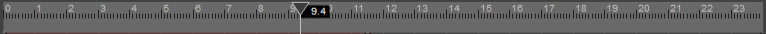
Эта линейка показывает время суток по треугольной стрелке. Перетаскивание этой стрелки вперед и назад изменит время суток на уровне и добавит эффекты, которые настройки оказывают в реальном времени, на видовой экран.
При выборе цвета цветная лента, прикрепленная к нижней части линейки, отображает предварительный просмотр этого цвета в течение 24 часов, показывая, как этот цвет меняется в течение дня.
Ценности
В левой части графика могут отображаться значения, соответствующие настройке, выбранной в окне настроек.
График
Фактический график также является интерактивным; появится ключ, где значение начнет меняться: 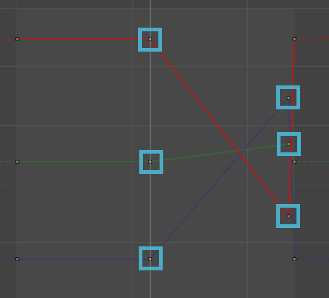
Эти квадраты можно выбрать, щелкнув по ним или перетащив рамку выбора вокруг них. Затем их можно перетаскивать, что изменит настройки в Окне настроек, относящиеся к выбранной строке. И снова изменения будут отображаться в режиме реального времени в окне просмотра.
Кроме того, новый ключ можно создать, нажав double на строку.
Удерживая клавишу Shift, пользователи смогут перемещать клавиши по горизонтали или вертикали по прямой линии.
Параметры времени
Параметры времени можно найти в нижней части графика: 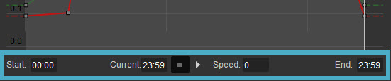
Вариант | Описание |
|---|---|
Старт | Начальное время, которое будет использоваться при запуске миссии. Если это значение установлено неправильно, время суток не будет установлено соответствующим образом в чисто игровом режиме. |
Текущий | Отображает текущее время, которое редактируется. |
Стоп Кнопка | Останавливает воспроизведение последовательности времени суток в редакторе. |
Играть Кнопка | Запускает или возобновляет воспроизведение последовательности времени суток в редакторе. Если текущее время не попадает в указанный временной диапазон, который находится между временем начала и окончания, воспроизведение кадра начинается в указанное время начала. |
Скорость | Скорость, с которой движется время, где значение 1 означает, что час игрового времени проходит за секунду реального времени. |
Конец | Время окончания, которое будет использоваться для миссии. Когда будет достигнуто время окончания, время зациклится, начиная следующий цикл времени суток с момента начала. |
Экологические активы
Начиная с версии 5.6, раздел «Просмотр файлов» удален из макета Environment Editor по умолчанию. Отныне пользователи могут создавать и изменять ресурсы среды через браузер ресурсов.
Как и любой другой актив в CRYENGINE, активы среды содержат определенные типы значений. Ресурсы среды можно использовать для управления визуальными аспектами уровня, такими как время суток, объемные облака, тени и т. д.
Создание и использование ресурсов среды
Новые активы можно создать, щелкнув правой кнопкой мыши пустое место в браузере активов и выбрав Новое → Окружающая среда. Двойной щелчок по активу среды в Обозревателе ресурсов вызовет новый экземпляр редактора и применит его параметры к текущему уровню, даже если Кнопка мгновенного редактирования выключен.
Вы можете щелкнуть правой кнопкой мыши по активу среды, чтобы вызвать контекстное меню. Затем, выбрав Установить по умолчанию для этого уровня вариант, вы можете установить актив среды по умолчанию. Также можно просмотреть результаты актива через Предварительный просмотр настроек среды вариант.
В качестве альтернативы, перетаскивание актива среды во видовой экран может управлять средой на основе ее параметров и устанавливать его в качестве актива среды по умолчанию: 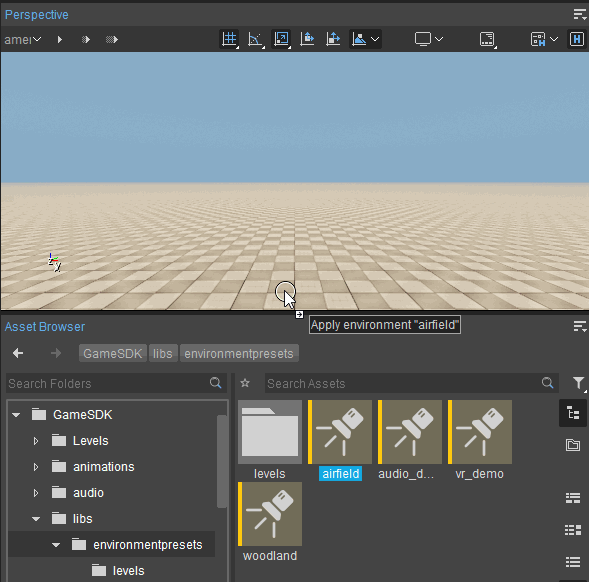